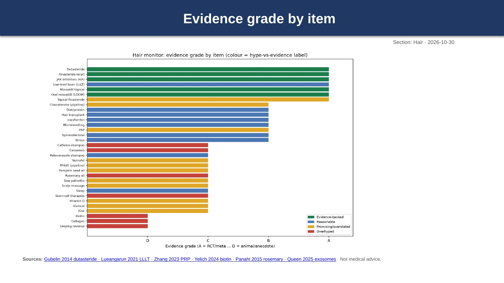
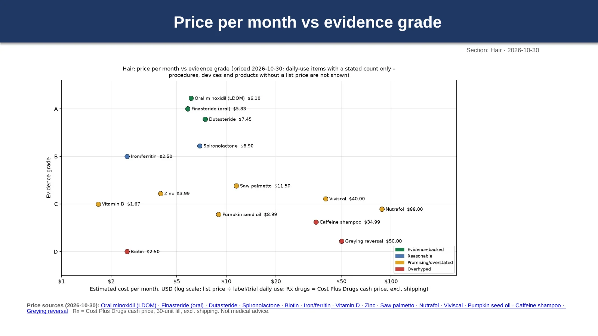
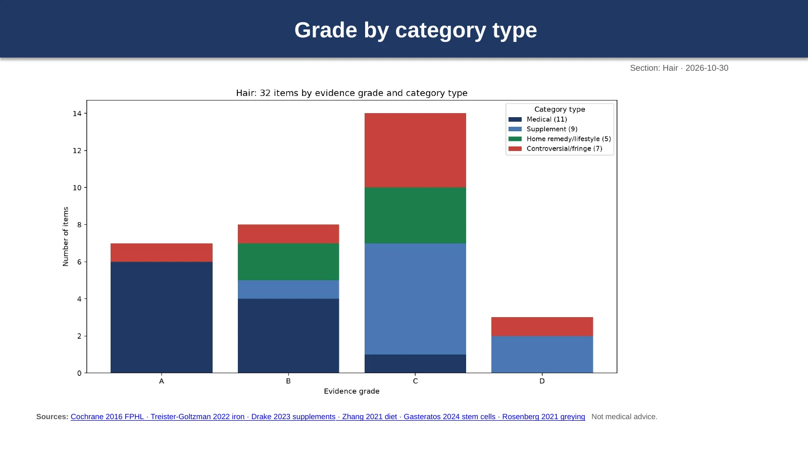

Hair
Not medical advice; published by the Longevity Strategies Project These charts summarize items discussed in the Longevity Health Supplements Guide (Google Slides). They are not a recommendation to use or avoid any product.


